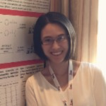

Dr. David S Wishart
Distinguished University Professor, Departments of
Biological Sciences and Computing Science, University of
Alberta
Scientific Co-director, The Metabolomics Innovation
Centre (TMIC)
Fellow of the Royal Society of Canada (FRSC)
Dr. David Wishart (PhD Yale, 1991) is a Distinguished University Professor in the
Departments of Biological Sciences and Computing Science at the University of Alberta.
He also holds adjunct appointments with the Faculty of Pharmaceutical Sciences and
with the Department of Pathology and Laboratory Medicine. He has been with the
University of Alberta since 1995. Dr. Wishart’s research interests are very wide ranging,
covering metabolomics, analytical chemistry, drug chemistry, natural product chemistry,
molecular biology, protein chemistry and neuroscience. He has developed a number of
widely techniques based on NMR spectroscopy, mass spectrometry, liquid
chromatography and gas chromatography to characterize the structures of both small
and large molecules. As part of this effort, Dr. Wishart has led the “Human Metabolome
Project” (HMP), a multi-university, multi-investigator project that is cataloguing all the
known chemicals in human tissues and biofluids. Using a variety of analytical chemistry
techniques along with text mining and machine learning, Dr. Wishart and his colleagues
have identified or found evidence for more than 250,000 metabolites in the human body.
This information has been archived on a freely accessible web-resource called the
Human Metabolome Database (HMDB). Dr. Wishart has also been using machine
learning and artificial intelligence to help create other useful chemistry databases, such
as DrugBank, FooDB and ContaminantDB and software tools (such as MetaboAnalyst,
CFM-ID and BioTransformer) to help with the characterization and identification of
metabolites, drugs, pesticides and natural products. Over the course of his career Dr.
Wishart has published more than 500 research papers in high profile journals on a wide
variety of subject areas. These papers have been cited >100,000 times.

Ms. Jiamin Zheng
Senior Research Scientist
Ms. Jiamin Zheng is a Senior Research Scientist with the TMIC Wishart node at the University of Alberta.
She currently co-leads the R&D activities for LC-MS based metabolomics platforms in the Wishart group.
Ms. Zheng received her MSc degree in Chemistry from the University of Alberta in 2012, supervised by
Dr. Liang Li. Ms. Zheng has worked in the metabolomics field for more than ten years, and has a strong
metabolomics background as well as extensive experience in applying LC-MS for metabolomics studies.
Since joining the Wishart lab in 2016, Ms. Zheng has led or participated in the development of all LC-MS
based metabolomics technologies currently being used in the Wishart node. She also participated in
multiple translational medicine research projects in the Wishart node, such as early-stage lung cancer
biomarker identification, colorectal cancer and polyps biomarker discovery, etc.
Dr. Lun Zhang
Research Associate
Dr. Lun Zhang is a Research Associate in Dr. Wishart’s lab the University of Alberta.
He currently co-leads the R&D activities for the LC-MS based metabolomics
platforms for Dr. Wishart’s node in TMIC. Dr. Zhang received his PhD degree in
Pharmacology from the Shanghai Institute of Materia Medica Chinese Academy of
Sciences (SIMM) in 2015. He was supervised by the current SIMM Director Dr. Li Jia.
After graduating, Dr. Zhang started his post-doctoral research in the University of
Toronto followed by the University of Alberta. Dr. Zhang has a strong metabolomics
and molecular/cellular biology background and extensive experience in the
application of LC-MS based metabolomics technologies. Since joining the Wishart
lab in 2017, Dr. Zhang has led or participated in the development of all LC-MS based
metabolomics technologies that are currently being used in the Wishart TMIC node.
Dr. Zhang also led multiple translational medicine research projects in the Wishart
node, such as early-stage lung cancer biomarker identification, colorectal cancer and
polyp biomarker discovery, and prion-like diseases biomarker discovery.
Dr. Rupasri Mandal
Dr. Rupasri Mandal obtained her Ph.D. degree in environmental analytical chemistry from Carleton
University, Canada, in 2001. Her research experience is broad and covers the field of metabolomics,
bioanalytical, biomedical, environmental/analytical and physical chemistry. Dr. Mandal has >20 years of
research/work experience in these fields. Over this period of time, she has gained an extensive
experience in the development of novel schemes and analytical/bioanalytical techniques for targeted
and untargeted metabolomics. She is quite familiar with the operation and general maintenance of all of
the GC-MS, LC-MS, NMR, HPLC and sample preparation equipment. She is also well acquainted with the
multivariate statistical software that is used to interpret metabolomic results. Dr. Mandal’s leadership
and expertise are crucial for project planning and project reporting, methods and technology
development and client service provision. Dr. Mandal has led and participated in multiple clinical/health
research projects in the Wishart node such as several maternal, prenatal, neonatal and other human
disease biomarker studies. These include first trimester prediction of early-/ late-onset preeclampsia,
down syndrome, fetal congenital heart defect, adult heart disease, pediatric kidney transplant and
early/late-onset of osteoarthritis, lung cancer, autism, IBD and colorectal cancer.
Dr. Gautam
multi-omics research
Dr. Gautam is a PhD. in computational biology and has worked in the field of multi-omics research. His post
doctorate was from University of Toronto in the field of phage genomics. He has over 10 years of research
experience in the field of Bioinformatics and software development. Over the years, Dr.Gautam has worked in
the field of proteomics, genomics and metabolomics. He has worked closely in the research and development
of the databases and software which are actively being used by the scientific community. Along with this he has
multitude of experience in some interesting projects related to machine learning and artificial intelligence. Apart
from scientific research, Dr.Gautam is also trained and certified Project Management professional, and his
initial professional experience also includes quality assurance & management in the Indian healthcare industry.
Ms. Reid
Ms. Reid has over 15 years of experience in the life sciences, including metabolomics
and proteomics. Prior to joining the MII team, Ms. Reid worked with Dr. Wishart’s
team at The Metabolomics Innovation Centre at the University of Alberta where she
was involved in developing strategic collaborations, securing numerous large-scale
projects, forming industry partnerships to support the organization’s long term
goals. Ms. Reid has played a key role in securing &; $10M in operational and research
funding.
Ms. Reid completed Master of Science degree at the University of Victoria, where her
research focused on addressing limitations with the accurate diagnosis of secondary
hypertension by developing a MALDI mass spectrometry-based assay for peptide
quantification for clinical purposes.